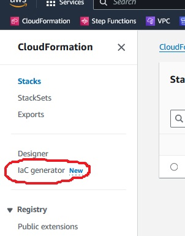
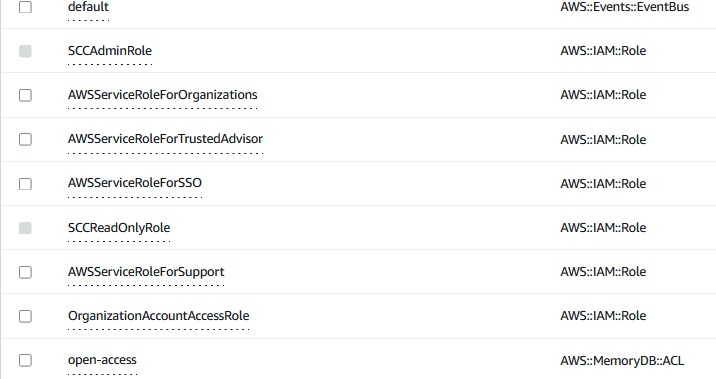

SCC
Brasil
os cloud gurus
Software Cloud Consulting
Your software development, cloud, consulting & shoring company
CloudFormation IaC Generator

By Wolfgang Unger
Introduction
How to get started with CloudFormation IaC Generator?
Do you want to generate CFN or CDK Code from your existing services or architecture?
AWS announced the CloudFormation IaC Generator in February 2024.
A great new feature I was waiting for years.
It's a common use case, you first create resources for a POC in the Web Console to see if
everyting works as expected, before you code your IaC and rollout the new services to multiple accounts.
Wouldn't it be great and save us a lot of time, if we just could generate the IaC for our POC with
a couple of mouse clicks instead of now starting to code the whole architecture in CloudFormation or CDK ?
Thats exactly what is IaC Generator serves for, so let's have a look if it really works.
Getting Started
If you switch to CloudFormation on the WebConsole you find the IaC Generator in the left menu.

AWS already provides a description of the 3 major steps, these steps are:
- Scan account resources
- Create CloudFormation Template
- Import to CloudFormation or CDK
So first let's scan our resources and press 'Start new Scan'
I am trying this in one of my company test and sandbox accounts, where I have developed a lot of POCs, so there should be something to find.
The scan takes a while but finally gets to Scan Status complete.
In this moment we cannot see a list of resources the scan found, we have to move to step 2 and Create a CloudFormation Template.
Create template
Now we have to define a template name and also the deletion and update replace policy.
Once done and me go forward, we can finally see the list of scanned resources.
As mentioned, I doing my test in a account which was used for creating a bunch of POCs, so I expected some results ... but this much?
Does the scan run over all regions, not just your current one?
I am asking myself, does this make sense? .. and already detect this point is not quite easy.
Even so you will have deployed your resources normally in one region, you might have often resources in the us-east-1 region.
In this region, the global resources are normally located, so for example a Certificate for a CloudFront Distribution must be deployed in us-east-1 and not for example in eu-central-1, where your services run.
So showing just the current region might be a limitation, but do we really need all regions? Not sure ... this makes sense.
What would actually happen if you select for example a EC2 in region eu-west-1 and now try to create to CloudFormation for eu-central-1,
where your are working right now in the Web-Console ? As you know the images are different from region to region, so this might cause us trouble.
I am not going to investigate this behaviour right now, but since I have hundreds of scan results,
I decide to start my test in a fresh new account where I can comprehend more easy, if the scan really works as expected.
2nd try, Scan resources in new account
I have created a new aws account in Organizations for my test and with a fresh new and empty account my tests should be much easier.
The only resource I have created is a IAM role to switch into the account. Besides this, no resources should be find by the Scan function.
I am running a new Scan and this is the result for a completly new account with just 2 roles created.
So 44 resources were scanned, let's have a look what resources were found, we move to 'Create template' again.
I am not going to list all resources here, but first to mention:
The scan does not affect all regions.
In the results is only 1 VPC, the default VPC in my region eu-central-1 and also just the 3 subnets from this VPC.
No other default VPCs are listed. Good to know this by now.
What else can be found in a empty, new account?
We can see 5 CloudFront Policies, these are also default Policies.
Also more from CloudFront, like OriginRequest Policies.
This helps us to understand one more important point, the global resources (located in us-east-1) are also found be the Scan.
This makes sense, as already discussed earlier. No other regions, but the global resources located in us-east-1.
We also find some Default Roles for example and we can also see the 2 Roles created by CloudFormation earlier.

Since my 2 Roles were created by CloudFormation, we cannot select them here, which also makes sense.
So basically we can find now the default resources which are already in a region to provide basic functionality like a default VPC and other resources for the same purpose.
Now we can start with creating CloudFormation templates.
Before I create a first resource manually, I will try to generate a CloudFormation Stack for the Default VPC. So let's select the VPC ( only the VPC ) and press Next.
Now the Generator will automatically preselect for us the related resources, for a VPC these are quite a bunch, like the Subnets, Routes, Internet Gateway etc.
Pretty nice this feature.
I press Create and get now the generated CloudFormation Template for the Default VPC .
You can now select the 3rd step and define the StackName, review your changes and import the resources to CloudFormation.
The VPC import works like a charme and the Default VPC is now imported and asociated to our CFN Template 'DefaultVPC'. Pretty cool, was quite fast and easy.
I will check the VPC, it got by now tags for CloudFormation, which the other Default VPCs in the other regions don't have.
Nice.
Of course we might not be done a 100% now.
For example this VPC CFN Template got no Parameters.
I use to define Parameters for a VPC, for example the ClassB Range or others.
You still might have to adapt the generated Templates a bit, but still this a huge game changer so far.
Now let's test the Generator on resources created by us .
Generating more resources
I will now launch an EC2 instance and try to generate the CFN Template for it.
I switch to EC2 and launch a Instance in my Default VPC.
To add a little bit of difficulty, I am adding a User Data Script to the instance to install a Apache.
#!/bin/bash -xe
sudo yum install -y httpd
sudo chkconfig httpd on
sudo service httpd start
Besides this, I select create a new Security Group and also allow Port 80.
The instance becomes healthy and I can also connect to the Webserver by its public IP.
Now let's run the scan again and see how much more resources will be found.
We will now find 50 resources scanned as result, 6 more as our first try.
I will press 'Create Template' and enter 'Webserver' as Template Name.
Again we will get the list of scanned resources to select from, by now much more resources are disabled to select, because we already added them to our DefaultVPC Stack.
I am looking for AWS::EC2::Instance and find my instance, select it and press Next.
The Generator will propose 4 related resources, NetworkInterface, SecurityGroup, Volume and VolumeAttachment.
Perfect, I keep this and press again Next, the Template gets generated.
Lets have a look into the Template, I am interested if the Userdata could be also added correctly.
The Template contains this line:
UserData: "IyEvYmluL2Jhc2ggLXhlCnN1ZG8geXVtIGluc3RhbGwgLXkgaHR0cGQKc3VkbyBjaGtjb25maWcgaHR0cGQgb24Kc3VkbyBzZXJ2aWNlIGh0dHBkIHN0YXJ0"
Userdate is Base64 encoded, so we have to use a Online Converter to decode this value.
And yes, decoded it is exactly the Script I have defined when I was launching the instance.
Pretty cool, this also worked.
But I already saw some lines in the CloudFormation Template which are not really nice ... let's skip this for now, We'll have a look on the generated Stack in detail later on.
Import template
Now I use the Import Function wait until the Stack ist deployed or better imported in the CloudFormation Console.
The Stack becomes green, now I can test something else.
Since we got by now a CFN Template for our Instance we can delete and re-create it.
If everythings works fine, the instance should be healthy again and the webserver reachable.
So I first save the Template to a Yaml File and delete the Stack.
Once deleted I create a new Stack based on this Tempate. Thats the plan.
But actually the Instance is still running, after the Template was deleted.
If you remember the first page of the wizard to create a Template, besides the Template name
there was also the deletion and update replace policy, which was selected by default with retain and we did not change this. Thats why the instance was not deleted.
So we have to re-create the template and this time set the Policies to 'delete'.
I repeat everything and import the Stack with the name 'Webserver2'.
Once created I save the template as Yaml File and Delete this Stack.
Now the instance really gets deleted, that's what we wanted to see.
But the Delete action runs into an error:
Resource handler returned message: "Volume vol-0048e2a9fabed97b3 is currently attached to {i-0a51a3145a909fa09}
Actually the instance was terminated, so a 2nd try should resolve this and it works (without selecting remaining the Volume)
Looks like the resources were deleted in wrong order, a DependsOn could solve this .
But again, we will have to make a little adapation on the generated Stack.
Redeploy template
I now create the instance again with the saved template.
I recieve 2 errors on creation.
EC2NetworkInterface: Only one primary private IP address can be specified
EC2VolumeAttachment: Resource handler returned message: "The volume 'vol-0048e2a9fabed97b3' does not exist.
The private IP address is indead defined twice in the template:
PrivateIpAddress: "172.31.21.103"
PrivateIpAddresses:
- PrivateIpAddress: "172.31.21.103"
Primary: true
I fix this by commenting out the first line.
Also there are referenced to resource IDs in the template.
InstanceId: "i-0a51a3145a909fa09"
VolumeId: "vol-0048e2a9fabed97b3"
But it should be a Ref to the CloudFormation Object, looking like this:
InstanceId: !Ref EC2Instance00i0a51a3145a909fa0900kDaoQ
VolumeId: !Ref EC2Volume00vol0048e2a9fabed97b30066Rhk
I fix this also ( and about 5 more wrong Refs) and try it again.
Now I get this error :
Network interfaces and an instance-level subnet ID may not be specified on the same request
Thats the point, where I will stop.
I can create this EC2 instance with a example EC2 CFN Template in 5 min.
If I need to fix the generated template for 45 minutes, thats not what I wanted to achieve be using
the IaC Generator.
I wanted to speed up, not to need more time.
On the first view it looks quite nice, a template gets generated, nice.
But if you take a closer look into the CFN template, you see multiple problems and the fact, it
cannot be deployed, mabye only after you have fixed 10 problems, makes it not really a tool which is speeding you up.
I think, the Generator needs still a lot of finetuning before we can start to use it.
Other resources
I made also some test with other resources, not just EC2.Since this blog already contains a lot of information, I will not add this here.
Maybe I create a 2nd blog about this one day.
Conclusion
Well indeed you can generate CloudFormation Templates with the IaC Generator.But you shouldn't take a closer look into the generated File.
There a still a lot of issues, the References are pointing the resources on aws not to CloudFormation objects,
so you can't delete a stack and re-create or deploy it into another account.
DependsOn are missing and of course Parameters are missing.
To get these Templates ready for usage, you will have to invest a lot of time to clean them up
I doupt you will be faster instead of writing a new Template ( if you have a good set of examples and templates already, this
is quite fast) from the Scratch with already Best Practices and well designed Parameters and InputValues and Outputs etc.
I think AWS must invest much more time and finetuning in this tool, before it makes sense to use it.
Right now you won't save time with the IaC Generator.
See also these blogs about CloudFormation:
IaC - infrastructure as Code
Pipeline for automatic CloudFormation Deployments
Autor

Wolfgang Unger
AWS Architect & Developer
6 x AWS Certified
1 x Azure Certified
A Cloud Guru Instructor
Certified Oracle JEE Architect
Certified Scrum Master
Certified Java Programmer
Passionate surfer & guitar player